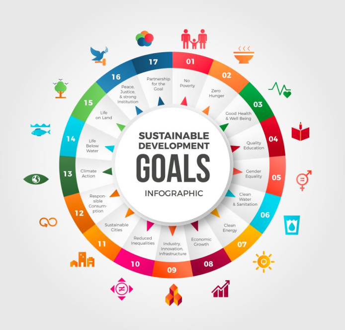

SDGs adalah kependekan dari Sustainable Development Goals atau Tujuan Pembangunan Berkelanjutan dalam bahasa Indonesia. SDGs adalah agenda global yang disepakati oleh 193 negara anggota PBB pada tahun 2015 yang bertujuan untuk mengakhiri kemiskinan, melindungi bumi, dan memastikan perdamaian dan kesejahteraan bagi seluruh manusia di seluruh dunia.
SDGs adalah kependekan dari Sustainable Development Goals atau Tujuan Pembangunan Berkelanjutan dalam bahasa Indonesia. SDGs adalah agenda global yang disepakati oleh 193 negara anggota PBB pada tahun 2015 yang bertujuan untuk mengakhiri kemiskinan, melindungi bumi, dan memastikan perdamaian dan kesejahteraan bagi seluruh manusia di seluruh dunia.
Berikut adalah daftar 17 Tujuan Pembangunan Berkelanjutan (Sustainable Development Goals/SDGs):
- Tanpa Kemiskinan (No Poverty)
- Tanpa Kelaparan (Zero Hunger)
- Kesehatan yang Baik dan Kesejahteraan (Good Health and Well-being)
- Pendidikan Berkualitas (Quality Education)
- Kesetaraan Gender (Gender Equality)
- Air Bersih dan Sanitasi (Clean Water and Sanitation)
- Energi Bersih dan Terjangkau (Affordable and Clean Energy)
- Pekerjaan Layak dan Pertumbuhan Ekonomi (Decent Work and Economic Growth)
- Industri, Inovasi, dan Infrastruktur (Industry, Innovation and Infrastructure)
- Ketimpangan yang Lebih Rendah (Reduced Inequalities)
- Kota dan Permukiman yang Berkelanjutan (Sustainable Cities and Communities)
- Konsumsi dan Produksi yang Berkelanjutan (Responsible Consumption and Production)
- Tindakan terhadap Perubahan Iklim (Climate Action)
- Kehidupan Bawah Air yang Berkelanjutan (Life Below Water)
- Kehidupan Darat yang Berkelanjutan (Life on Land)
- Perdamaian, Keadilan, dan Institusi yang Kuat (Peace, Justice and Strong Institutions)
- Kemitraan untuk Tujuan (Partnerships for the Goals)
Pada SDGs nomor 4 "Pendidikan Berkualitas" (Quality Education). Tujuan dari SDGs nomor 4 adalah untuk memastikan bahwa semua orang di seluruh dunia mendapatkan akses ke pendidikan yang berkualitas, inklusif, dan setara.
Tujuan SDGs nomor 4 dijabarkan dalam beberapa target, yaitu:
- Meningkatkan akses dan partisipasi pendidikan dari semua orang, terutama dari anak-anak, orang dewasa, dan kelompok yang rentan.
- Meningkatkan kualitas pendidikan dan pembelajaran melalui standar dan kurikulum yang relevan, sesuai dengan kebutuhan lokal dan global.
- Meningkatkan kemampuan guru dan fasilitator pendidikan untuk memberikan pengajaran yang baik dan bermutu.
- Meningkatkan akses dan kesempatan untuk pendidikan teknis, kejuruan, dan pendidikan tinggi.
- Meningkatkan keterampilan yang diperlukan untuk bekerja dan berkembang dalam masyarakat global yang berubah.
- Meningkatkan ketersediaan dana dan sumber daya untuk pendidikan dan mengurangi kesenjangan pendanaan antara negara-negara.
SDGs nomor 4 memiliki peran penting dalam membangun masyarakat yang berkelanjutan dan adil. Pendidikan berkualitas dapat meningkatkan produktivitas dan inovasi di seluruh sektor ekonomi. Pendidikan juga memainkan peran penting dalam memerangi kemiskinan, meningkatkan kesehatan, dan mencapai kesetaraan gender. Pendidikan yang baik dan layak merupakan salah satu faktor kunci dalam mempromosikan perdamaian dan membangun masyarakat yang stabil.
Namun, masih banyak tantangan yang harus diatasi untuk mencapai tujuan SDGs nomor 4, terutama di negara-negara berkembang dan daerah-daerah yang terisolasi. Beberapa tantangan meliputi akses yang terbatas, kurangnya infrastruktur pendidikan, dan kualitas pendidikan yang buruk. Oleh karena itu, pencapaian tujuan SDGs nomor 4 menjadi sangat penting untuk menciptakan masyarakat global yang adil dan berkelanjutan.